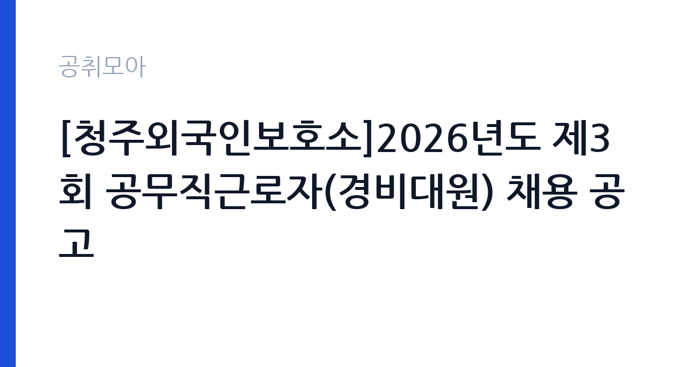

[국가기관] [청주외국인보호소]2026년도 제3회 공무직근로자(경비대원) 채용 공고
법무부 청주외국인보호소 · 충북 · 마감 2026-10-27 (D-8) · 출처 나라일터

한눈에 보는 모집 조건
| 기관 | 법무부 청주외국인보호소 |
|---|---|
| 공고명 | [청주외국인보호소]2026년도 제3회 공무직근로자(경비대원) 채용 공고 |
| 고용형태 | 공무직 |
| 근무지 | 충북 |
| 게시일 | 2026-10-19 |
| 마감일 | 2026-10-27 (D-8) |
지원자격, 이렇게 읽으세요
- 공무직 2명
- 접수 ~2026-10-27 마감
- 세부 조건은 원문 공고문 확인
공무직근로자는 공무원이 아니라 근로기준법이 적용되는 근로자이지만, 기간의 정함이 없는 무기계약으로 운영되는 경우가 많아 정년까지 근무가 가능합니다. 이번 공고는 제3회 채용으로, 경비대원 2명을 선발합니다. 응시자격의 세부 조항은 첨부 공고문에 있으므로 원문을 확인하셔야 합니다. 일반적으로 경비 직무에서는 신체 건강, 결격사유 여부, 교대 근무 가능 여부를 확인합니다. 외국인보호소라는 시설의 특성상 보안 규정 준수와 신원 확인이 엄격합니다. 접수 전에 근무 형태와 교대 방식, 수당 체계를 확인해 두는 것이 좋습니다.
이 공고의 포인트
이 공고의 핵심은 안정성입니다. 공무직 경비대원은 무기계약으로 운영되어 정년까지 근무가 가능하고, 법무부 소속 시설이라 고용이 안정적입니다. 두 번째는 업무의 성격입니다. 외국인보호소는 출입국 관리법에 따라 보호 대상자를 수용하는 시설로, 경비 업무는 시설 보안과 질서 유지가 중심입니다. 세 번째는 근무지입니다. 충북 청주 지역으로, 수도권 공고에 비해 경쟁이 덜합니다. 다만 교대 근무와 야간 근무가 필수이므로 생활 리듬을 감당할 수 있는지 먼저 판단하십시오.
전형은 어떻게 진행되나
전형은 서류전형과 면접전형으로 진행됩니다. 서류에서는 응시자격과 결격사유를 확인하고, 면접에서는 경비 업무 수행 능력과 근무 태도를 봅니다. 경비 직무 특성상 상황 판단과 대응을 묻는 질문이 나옵니다. 최종합격 후에는 신원조회와 채용 신체검사가 이어집니다. 접수는 공고문에 안내된 방식에 따라 이뤄지며, 마감일이 10월 27일로 촉박합니다. 서류를 낸 뒤에는 연락 가능한 번호를 정확히 기재하고, 면접 일정 통보를 놓치지 않도록 하십시오.
이런 분께 추천해요
- 충북 청주 지역에서 근무할 수 있는 분 — 청주외국인보호소 근무입니다
- 교대·야간 근무가 가능한 분 — 시설 경비는 24시간 운영됩니다
- 무기계약 공무직으로 안정적인 근무를 원하는 분
지원 전 체크리스트
- 교대 근무와 야간 근무가 가능한가 — 경비 직무의 기본 조건입니다
- 신원조회와 신체검사를 통과할 수 있는 결격사유가 없는가
- 첨부 공고문의 응시자격과 제출서류를 확인했는가
- 마감일 2026-10-27 이전에 접수했는가
모집 일정과 제출 타이밍
마감은 2026년 10월 27일입니다. 공고가 10월 19일에 올라왔으므로 준비 기간은 8일입니다. 첫날 공고문을 확인하고, 이틀 안에 지원서를 작성해 제출하는 일정이 현실적입니다. 면접은 서류 합격자에게 개별 통보되며, 통보 후 일정이 짧습니다. 경비 직무는 체력과 건강 상태를 확인하는 절차가 있을 수 있으니, 최근 건강 상태를 미리 점검해 두십시오. 합격 후 임용일이 빠르게 잡히는 경우가 많습니다.
직무 이해하기: 국가기관
외국인보호소는 출입국관리법에 따라 강제퇴거 대상 외국인을 보호하는 법무부 소속 시설입니다. 경비대원은 시설의 출입 통제와 보호 구역 순찰, 질서 유지, 안전 사고 예방 업무를 맡습니다. 구체적으로는 출입자 확인과 검색, CCTV와 보안 장비 모니터링, 보호 대상자 이동 시 호송 지원, 시설 내 안전 점검, 비상 상황 대응 등이 핵심입니다. 24시간 운영되는 시설이므로 교대 근무가 필수이고, 야간 근무도 포함됩니다. 상황 발생 시 규정에 따른 보고와 기록이 중요하며, 임의 판단으로 처리해서는 안 되는 업무입니다.
자기소개서 작성 팁
경비 직무 지원서는 책임감과 규정 준수 태도를 보여주는 것이 핵심입니다. 첫 문단에 지원 동기를 간단히 쓰고, 교대 근무가 가능하다는 점을 밝히십시오. 본론에서는 경비, 시설 관리, 안전 관련 경험을 구체적으로 적으십시오. 군 복무 경험이나 시설 경비 근무 경력이 있다면 상세히 쓰는 것이 좋습니다. 상황을 발견해 보고하고 조치한 사례가 있으면 강한 소재가 됩니다. 마무리에는 장기 근무 의사를 밝히십시오. 감점 요인은 야간 근무를 꺼리는 인상을 주거나, 규정보다 개인 판단을 앞세우는 서술입니다.
면접 준비 포인트
면접은 상황 대응 질문이 중심입니다. 보호 대상자 간 다툼이 발생하면 어떻게 할지, 시설 출입문에 무단 침입자가 나타나면 어떻게 대응할지, 상급자 지시가 규정과 다를 때 어떻게 할지 같은 질문이 나옵니다. 답할 때는 규정에 따른 보고와 기록을 먼저 언급하십시오. 법무부 시설인 만큼 절차 준수가 중요합니다. 또한 교대 근무 적응과 건강 상태에 대한 질문이 붙습니다. 솔직하게 답하고, 체력 관리 계획을 간단히 언급하면 신뢰를 줍니다.
급여·근무조건 읽는 법
보수는 법무부 공무직 보수 기준에 따라 정해지며, 원문 공고문의 처우 항목에 명시됩니다. 이번 공고 본문에는 금액이 공개되지 않았으므로 첨부 공고문에서 확인하셔야 합니다. 공무직은 기본급에 각종 수당이 붙는 구조이고, 경비 직무는 교대 근무에 따른 야간·휴일 근무수당이 추가됩니다. 무기계약으로 운영되는 경우 4대 보험과 퇴직급여가 적용되고 정년까지 근무가 가능합니다. 실수령액은 교대 근무 수당에 따라 달라지므로, 기본급만으로 비교하기는 어렵습니다. 수당 체계와 근무표는 면접 단계에서 확인하는 것이 좋습니다.
자주 묻는 질문
- 무기계약인가요?
공무직근로자로 채용되며, 일반적으로 무기계약으로 운영됩니다. 정확한 근로계약 형태는 원문 공고문의 근로조건 항목을 확인하십시오. - 교대 근무가 있나요?
외국인보호소는 24시간 운영 시설이므로 교대 근무와 야간 근무가 포함됩니다. 근무표는 부서 배치에 따라 정해집니다. - 근무지는 어디인가요?
충북에 있는 법무부 청주외국인보호소입니다. 정확한 주소와 출퇴근 조건은 원문 공고문에서 확인하십시오.
함께 보면 좋은 공고
[국가기관] 2026년 제5회 국립부곡병원 의무직 공무원 경력경쟁채용시험 공고 — 마감 2026-10-30[국가기관] 한국체육대학교 대학회계무기직원(미화원, 1명) 채용 공고 — 마감 2026-10-30[국가기관] 2026년 수도권대기환경청 기간제근로자 채용 공고 — 마감 2026-10-28출처: 나라일터 공개정보를 바탕으로 공취모아가 정리한 안내글입니다. 모집 조건·일정은 변경될 수 있으니 지원 전 반드시 원문 공고문을 확인하세요. 본 글은 정보 제공용이며 합격을 보장하지 않습니다.